EDS Migration Docs
Architecture, blocks and delivery notes for the Hersheyland Edge Delivery Services site: homepage, shared navigation, product, recipe, story, brand, activity and about pages.
Hersheyland EDS Pilot
Authorable migration of Hersheyland pages onto Edge Delivery Services, using original source images and licensed Gazpacho and TT Norms Pro fonts.
This pilot migrates the Hersheyland homepage, shared navigation, and product, recipe, story, brand, activity and about pages to Edge Delivery Services as authorable blocks, keeping consent-gated third-party integrations (OneTrust, Bazaarvoice, PriceSpider, Algolia) off the critical path. All eight journeys are complete.
Purpose
- Authorable migration of the Hersheyland homepage using original source images and licensed fonts (from the repository README), extended to shared navigation, product, recipe and story pages.
Core engineering requirements
- Use the EDS block-based development model only (
scripts/aem.js+scripts/scripts.js); there is no build step andpackage.jsonholds devDependencies only. - Author all content in DA (org
adobedrago, sitehersheys-eds); navigation and footer are separate documents (/nav,/footer). - Load third-party tags only after first paint and never block a section on a vendor without a time limit (
scripts/delayed.js,docs/third-party-loading.md). - Gate Adobe Launch and tracking cookies on OneTrust Performance consent (group
C0002inscripts/consent-state.js). - Run under a Content-Security-Policy with Trusted Types (
head.html, default policy inscripts/scripts.js). - Keep design values in a DTCG token catalog (
design/tokens.json) that generatesdesign/tokens.css; runnode design/generate-tokens.mjsafter changes. - Select page themes with
Templateandthememetadata; brand themes are listed inscripts/brand-themes.jswith one stylesheet each indesign/themes/. - Decorate blocks defensively: authors add and omit cells, so each block reads what is present and skips the rest.
- Keep Storybook (
storybook/) and design generators out of EDS delivery via.hlxignore.
Journeys
Status values were supplied by the team (homepage, product, recipe, story and header & footer complete; brand, activity and about in progress). Product pages still show a path prefix, not a specific page.
Repository
| Effort | Hersheyland → EDS migration pilot |
| GitHub repo | AdobeDrago/hersheys-eds · branch main |
| Base | adobe/aem-boilerplate (package @adobe/aem-boilerplate v1.3.0) |
| Dev model | EDS block-based only (scripts/aem.js + scripts/scripts.js) |
| Backend services | None in this repo (no workers or proxy). Third-party services: Algolia (recipe search, related products), Bazaarvoice (ratings and reviews), PriceSpider/Wayvia (where to buy), OneTrust (consent), Adobe Launch (analytics, off unless configured). |
| Reference site | https://www.hersheyland.com |
| Testing | CI runs lint only. npm run test:tokens and the Storybook suites (storybook:test, storybook:test:browser) exist but are not run in CI. |
Key references
Live page — production (migration source)
EDS — AdobeDrago preview and live
https://{branch}--hersheys-eds--AdobeDrago.aem.page/.
Live
https://main--hersheys-eds--AdobeDrago.aem.live/
Authoring, code and docs
Install & run
-
Clone and installgit clone https://github.com/AdobeDrago/hersheys-eds.git cd hersheys-eds npm i
Installs ESLint, Stylelint and other dev dependencies from
package.json; there is no build step. -
Run the AEM CLInpm install -g @adobe/aem-cli aem up
Starts the local dev server at
http://localhost:3000: local code against previewed content. Content comes from Document Authoring (da.live/#/adobedrago/hersheys-eds).Alternate. Without a global install:npx -y @adobe/aem-cli up. -
Inspect real markup before changing a blockcurl localhost:3000/<path>.plain.html
Markup comes from the backend; check it first. Remember that
buildAutoBlocksrewrites content before a block runs. -
Regenerate design tokens (after editing the catalog)node design/generate-tokens.mjs node design/generate-tokens.mjs --check
-
Storybook (optional, isolated dependencies)npm --prefix storybook ci npm run storybook
Opens at
http://localhost:6006.npm run storybook:buildproduces a static build; Storybook is excluded from EDS delivery.
Linting & CI
.github/workflows/main.yaml runs npm run lint on every push — it does not run a build, deploy, or test step. The design token tests (npm run test:tokens) and Storybook suites (storybook:test, storybook:test:browser) exist but are run manually.
EMA (Experience Modernization Agent) for Migration
EMA is the AI-assisted workflow this project uses to accelerate page and block migrations onto Edge Delivery Services. Rather than a single prompt, it is run as a short, repeatable sequence of tasks that first brings the agent up to speed on the project, then carries out the migration, and finally checks the result back against its source — so every migration is grounded in current project context and is validated rather than taken on faith.
AEM Coder content migration checklist
The checklist below is run at the start of every AI-assisted migration task to warm up the agent and validate its output. It is a template: items in curly braces or shown as example URLs ({block-1}, https://example.com/source-page) are placeholders to be substituted with the actual block name or source URL for the page in hand before the checklist is run.
example.com or a literal {block-1}.
-
Warm up on project documentation
Read
AGENTS.mdand this document before making any changes, so the agent's output follows established blocks, conventions, and the project's EDS standards rather than inventing new patterns. -
Migrate the page
Migrate the page at
{source-page-url}into EDS-compatible markup, re-modeling its content as sections and blocks per AEM's markup conventions. -
Migrate the design
Migrate the visual design from
{design-source-url}, translating layout, typography, and styling into block-scoped CSS consistent with the project's design tokens and breakpoints. -
Style each migrated block
Style the following blocks individually against the source design, one at a time:
{block-1}{block-2}{block-3}
-
Critique each styled block
Review the styled output for the blocks below against the source design and this project's CSS guidelines, flagging any visual or accessibility gaps before moving on:
{block-1}{block-2}
-
Validate the migrated page
Compare the migrated page side by side with its source at
{source-page-url}, confirming content parity, layout fidelity, and that no sections or blocks were dropped in translation. -
Set up navigation
Set up site navigation sourced from
{navigation-source-url}, so the migrated page links correctly into the rest of the site.
Deploying
There is no deploy script. Code and content ship separately:
- Merging to
mainships code (AEM Code Sync). - Content publishes separately from DA: preview first, then publish. Merging code does not publish content.
- A pull request needs a
{branch}--hersheys-eds--AdobeDrago.aem.page/{path}preview link. - All committed files are served;
.hlxignoreexcludes dotfiles, Markdown, tests, design generators and Storybook.
docs/index.html is not excluded by .hlxignore, so it is served at /docs/index.html once merged. Add docs/* to .hlxignore if the documentation should stay internal.
Block-loading routing
No custom block routing. scripts/aem.js is the vendored boilerplate file and block resolution is stock: a block named x loads blocks/x/x.js and blocks/x/x.css. Compared with current adobe/aem-boilerplate it only lacks a newer RUM error-locator addition for unhandled rejections; there are no local edits (never edit it).
Variants are resolved inside the base block, not by the loader:
| Base block | Variant handling |
|---|---|
cards | cards.js imports cards-product.js and cards-product.css when the block has the product class; quotes, steps and wheel likewise import their own cards-<variant>.js; slider, related and callout are handled in cards.js. |
hero | hero.js is the recipe variant and loads hero-<variant>.js for the class product, article, brand, marquee or video. |
tabs | tabs.js imports tabs-nutrition.js and tabs-nutrition.css for the nutrition class. |
widget | Built from /widgets/… links (see page decoration); widget.js loads the matching folder under widgets/. |
Page decoration (scripts/scripts.js)
| Behavior | What triggers it |
|---|---|
whenActivated() | Exported helper. Resolves immediately, or on prerenderingchange for a speculatively prerendered page, so third parties never run unseen. |
whenVisible(el, cb) | Exported helper. Runs the callback the first time the element intersects the viewport. |
| Trusted Types default policy | Browsers that support trustedTypes. Strips srcdoc from iframes and removes scripts from contextual fragments and document.write input. |
buildAutoBlocks | Links to /fragments/ are replaced by fragment content; links to /widgets/ become widget blocks (paragraph replaced when the link is its only content). |
decorateButtons | A link alone in a paragraph with authored bold, italic or both becomes button primary, secondary or accent. Image links and links whose text is a URL are skipped. |
| Theme loading (eager) | Body class hershey-home, hershey-product or hershey-recipe loads design/tokens.css + styles/hershey-home.css; a body class matching an entry of BRAND_THEMES then loads design/themes/<name>.css. |
| Path classes | /products/ adds hershey-product; /about, /activities, /all-recipes and /stories add it too unless the page is a hershey-recipe; /stories/ also adds hershey-story. |
loadFonts | Loads styles/fonts.css eagerly on viewports of 900px or wider or when fonts-loaded is in session storage; otherwise in the lazy phase. |
warmUpShopNow | /products/ pages with a /where-to-buy link: adds a prefetch for the PriceSpider widget script and a prerender hint for the link, once the page is shown. |
loadDelayed | After activation, imports scripts/delayed.js 3 seconds later (OneTrust, then consent check, Bazaarvoice on pages with [data-bv-show]). |
Stock behavior still applies: decorateTemplateAndTheme turns Template and theme metadata into body classes, and the loader runs eager, lazy then delayed phases (loadPage()).
EDS blocks
Blocks under blocks/ with a decorate entrypoint, in alphabetical order. Variants (such as cards product/slider/quotes/steps/wheel, hero recipe/article/product/marquee/video, tabs nutrition) are resolved inside their base block. Click a block name for how to author it in the Block authoring guide.
| Block | Purpose |
|---|---|
| accordion | Questions that expand to answers; each row is a native details/summary. |
| banner | Full-width band with heading, text and one call to action; halloween variant adds the seasonal pattern. |
| breadcrumb-trail | Breadcrumb links with a home icon and chevron separators; trailing unlinked item is the current page. |
| cards | Card lists. Variants: welcome-cards, social, slider (native scroll with arrow controls), related (slider with dots, Algolia fallback), product (authored product cards with Bazaarvoice id); brand-page variants brands, spotlight, stories, tiles, shop, grid, content; callout (photo, title and description over a teal bar; kiss-dot carousel below 992px, as on the FAQs page); quotes (fan quotes on a blue band between scalloped edges); steps (product slider with a floor shadow); wheel (spin-the-wheel with silver rim, as on the KISSES page). The last three each load their own script and stylesheet. |
| columns | Side-by-side content. Named layouts homepage-hero and feature; brand-page layouts fact, callout, article, video, follow, quotes, blog, blobs; story layouts activity, craft, closing, pair. Recipe ingredients and nutrition are in recipe-details. |
| details-and-directions | Activity pages: You'll Need supplies, directions and Make Mode (needs section style activities); recipes use recipe-details. |
| footer | Loads /footer; brand watermark from the authored logo, link sections, OneTrust cookie-preferences link with a fallback when the CMP failed to load. |
| fragment | Loads another page’s content into this one; the only block imported across blocks (loadFragment). |
| header | Loads /nav; logo, nested category menu, search form; closes on Escape; desktop at 992px. With Style: hershey-nav, an optional 4th nav section becomes the "Hershey sites" utility bar (bold link = current site), which hides on scroll down and returns on scroll up. Dropdown tile icons zoom on hover (150ms, component.header.motion.tile-hover token). |
| hero | Recipe hero (default, Hero (Recipe)), article (story image, title, date), brand (brand landing hero) and product (field-table model, image gallery, product-master sheet fallback, Bazaarvoice rating), marquee (scrolling ticker strips) and video (looping muted background video from an .mp4 link, optional poster, pause/play button; used on the About/History page). |
Elfsight Instagram feed: the authored cell holds the Elfsight app id (validated as a UUID); loads elfsightcdn.com/platform.js and removes the container if the script fails. Not consent-gated, to match the live site. | |
| jump-links | In-page navigation: a grid of icon tiles, each linking to a section further down the page ("Jump to a Section" on the FAQs page). |
| link-group | Dark band with eyebrow and heading beside a slider of square link tiles (three per page, previous/next buttons and kiss dots); "Explore Recipes, Products, Activities & More" on the history page. |
| newsletter | Signup form with authored labels and client-side email/ZIP validation; shows an authored thank-you card on submit. No network request in the block. |
| newsletter-signup | Two-column email capture on recipe pages: heading and note left, email field, consent checkbox and button right; stacks below 820px. |
| poll | Trivia quiz (Poll (quiz)): authored as key/value rows (eyebrow, question, options with the correct answer in bold, answer, note). Choosing an answer shows "Correct!" or "Better luck next time!" plus the explanation. Nothing is sent; votes for other poll types are kept in localStorage when it is available. |
| recipe-details | Recipe pages. Variants ingredients (ingredients and directions) and nutrition (Nutrition Facts label and contact box); each loads its own script and stylesheet. |
| hersheys-search | Algolia-backed listing (variants recipes, activities, products, stories): search, facets, sort, result grid, paging; 8 s timeout to an error state. |
| social-share | Share tray (Facebook, Pinterest, Email) and copy-link button using shared Font Awesome Free icon styles. |
| tabs | Tabbed content (recipe collections, with arrow/Home/End keys); nutrition variant for Nutrition Facts, Ingredients and Dietary Info, choosing the sheet tab from brand metadata; brand-tiles variant for the tabbed brand-logo grid on /brands (its own script and stylesheet). |
| timeline | One decade of company history on /about/history: decade label and intro, then year cards in two columns (each row's first cell is left or right). One block per decade. |
| timeline-nav | "Select a Decade" dropdown under the history hero; each entry jumps to a timeline block by its #1850-style id. |
| widget | Loads a widget from widgets/<path>/<name>.html into the page; created by auto-blocking from /widgets/ links. |
Several blocks have an authoring README (blocks/hero/README.md, blocks/columns/README.md, blocks/breadcrumb-trail/README.md, blocks/hersheys-search/README.md) and a metadata.json describing variants. The newer blocks jump-links, link-group, timeline and timeline-nav have READMEs with authoring tables too. Storybook has a story for each documented block.
Authoring basics
Rules that apply to every page in Document Authoring (DA). The block guide below assumes them.
| Topic | How it works |
|---|---|
| Blocks | A block is a table. The first row holds the block name, with variants in brackets and separated by commas: Cards (product, slider). An unknown variant name is ignored without an error, so check the spelling. |
| Sections | A horizontal rule (---) starts a new section. A Section Metadata table inside the section, with a Style row, sets the section's look (see Section styles). Style is the only Section Metadata key the code uses. |
| Page metadata | A Metadata table at the end of the page. Keys such as template, theme, brand and bvid change how blocks behave (see Page metadata). |
| Buttons | A link alone in its own paragraph becomes a button when it is formatted: bold = primary, italic = secondary, bold and italic = accent. A plain link stays a text link. Several blocks depend on this, such as the footer newsletter and column callouts. |
| Icons | :icon-name: in text becomes the icon /icons/icon-name.svg. |
| Automatic blocks | Any link to /fragments/… is replaced by that fragment's content. Any link to /widgets/… becomes a Widget block. This applies everywhere, including inside other blocks and in /nav and /footer. |
| One-line cells | A cell holding a single line of plain text is served without a paragraph. Blocks that only read paragraphs drop it: the Banner text, the Link Group eyebrow and the Timeline Nav label. Keep that text in the same cell as other content, such as the heading. |
| Data sheets | Blocks marked Authored first fill empty cells from sheets (/products/product-master, /products/nutrition, /recipes/ingredients, /recipes/nutrition, /activities/youllneedsteps). A sheet must be previewed and published like a page before its rows show. The product master is too large to load whole (the full JSON returns HTTP 413), so the code always reads one brand tab (?sheet=<brand>); its tabs include hersheys, reeses, cadbury, rolo, payday, york, twizzlers and mounds. /products/nutrition has tabs only for hersheys, reeses, cadbury, rolo and payday, so the nutrition fallback does nothing for other brands. |
| Checking a page | Preview in DA and open main--hersheys-eds--AdobeDrago.aem.page/<path>. To test a code branch, use <branch>--hersheys-eds--AdobeDrago.aem.page/<path>. Every block also has examples in Storybook (npm run storybook). |
Block authoring guide
How to author each block and variant, taken from the block code, READMEs and Storybook stories. The example tables show what each row and cell holds. The dark first row is the block name exactly as authors type it.
- everything comes from the authored page. To change it, edit the page.
- authored content wins; a sheet (or Algolia, for related cards) only fills what was left empty.
- the content is loaded from another document, a sheet or a vendor every time. To change it, edit the source.
AccordionQuestions that expand to answers
| Accordion | |
|---|---|
| Question | Answer (any content) |
| Question | Answer |
- Cells: one row per item. Cell 1 is the question; a row with an empty question is removed. Every cell after the first is merged into the answer.
- Look: to get the FAQ layout (two-thirds column, maroon plus/minus), put the block in a section with
Style: faq, or on a brand page. - Watch out: keep the question to one paragraph or heading. Several paragraphs all end up inside the clickable line. Every item starts closed.
BannerDark band with heading, text and one call to action
| Banner | |
|---|---|
| Heading Text paragraph | Call-to-action link |
- Variants:
Banner;Banner (halloween)adds the seasonal pattern. - Cells: one row, one or two cells. The block keeps the first heading, the paragraphs without links and the first link. Everything else is dropped.
- Watch out: a paragraph containing any link, including an inline link in the body text, is dropped completely, and only one CTA is used. Text on its own line in its own cell is also dropped, so keep it under the heading.
Breadcrumb TrailBreadcrumb links with a home icon, or a single back link
| Breadcrumb Trail |
|---|
| Home link · section link · … · Current page (plain text) |
- Cells: one cell with the links in order. A list, separate paragraphs, or several links in one paragraph all work. Separators (
> / | ›) are ignored, so you don't need them. - Watch out: the first link always becomes the home icon, whatever its text. Write the current page as plain text, not a link.
Breadcrumb Trail (back): one link, shown as a back link with a chevron on a maroon bar (e.g. VIEW ALL PRODUCTS). Only the first link is used.
CardsCard grids and sliders: 17 variants
Default model (most variants)
| Cards (slider) | |
|---|---|
| Picture | Heading (linked) Text Link |
| Picture | Heading (linked) Text |
- Cells: one row per card. A cell holding only a picture is the image; other cells are the body. Both are optional.
- Watch out: a picture in the same cell as text counts as body, not image. Default images are cropped to 4:3. In
slider,welcome-cards,social,spotlightandgrid, the image links to the body's first link. - Slider options:
slideradds arrows;singlemoves one card per click;dotsadds page dots. Arrows and dots hide when every card fits.
Variants
| Author as | Use for | Content |
|---|---|---|
Cards (welcome-cards), (products), (social) | Look only: 3-up rounded, round product images, 2–4-up social tiles | Default model |
Cards (callout), (callout, blue) | Photo, linked title and text over a teal (or blue) bar, as on /about/faqs | Default model. Don't add slider; it is added for you. |
Cards (slider, brands) | "Get a Taste of Our Brands" square brand tiles | Picture | linked H3 brand name. The eyebrow, heading and button go above the block as normal text. |
Cards (spotlight) | Brand-page recipe feature: a big first card beside smaller cards | Picture | optional tag paragraph, title, text, link. The first card is the big one. |
Cards (stories, slider) | Square photos with a white story box | Picture | title, text, CTA link |
Cards (tiles) | Coloured flavour tiles | Picture | title, text. Colours alternate orange and purple by position. |
Cards (shop) | White box: intro, then product tiles with shop buttons | Row 1: intro text only, no picture. Later rows: picture | title, shop link. |
Cards (grid) | Recipe list, 2 then 3 across, 16:9 photos | Picture | optional tag right before a linked H3. The tag "Popular" gets a star. |
Cards (slider, content) | Brand-page recipe and story slider | Picture | linked title |
Cards (flip, slider) | Cards that turn over on click (SOUR STRIPS) | One or two pictures (front, back) | H2–H4 title, text, button. The title is required. |
Cards (slider, related, recipes) | "You Might Also Enjoy…" on recipe and activity pages | Leave empty to fill from Algolia (6 related recipes, or activities under /activities/). Authored cards win. |
Cards (product) | Product cards; the whole card links | See the product table below. |
Cards (product, related) | Related products on product pages | Leave empty to fill from Algolia (4 products). Authored cards win. |
Cards (product, slider) = Cards (brand, slider) | Brand-page product slider | Product table. Only slides on brand pages; elsewhere it is a grid. |
Cards (quotes) | Fan quotes on a blue scalloped band (/oreo-cup) | See the quotes table below. |
Cards (steps) | One-at-a-time product carousel (/rolo) | See the steps table below. |
Cards (wheel) | Spin-the-wheel flavour picker (/kisses) | See the wheel table below. |
Cards (product)
| Cards (product) | |
|---|---|
| Picture, or a link to the image | Badge paragraph (optional, e.g. Seasonal) H3 linked to the product page Size paragraphs bvid: 00034000002467 (optional, hidden) |
- Watch out: a row without both an image and a heading is dropped without an error. The heading's link is the card link.
SeasonalandLimited Editionbadges get an icon. Thebvidline is hidden and doesn't add a rating.
Cards (quotes)
| Cards (quotes) |
|---|
| Top scalloped-edge picture |
| Eyebrow Quote Author (or a picture on its own) |
| … one row per slide … |
| Bottom scalloped-edge picture |
- Watch out: the first and last rows are always used as the edges. Leave them out and the first and last quotes disappear. Only the first cell of each slide row is used.
Cards (steps)
| Cards (steps) | ||
|---|---|---|
| Heading text | Product picture | Caption |
- Watch out: cell order matters. The heading is plain text (formatting is dropped). The floor shadow comes from the code.
Cards (wheel)
| Cards (wheel) | |
|---|---|
| Heading and text (copy row) | |
| Wheel artwork picture (no link) | |
| Product picture | Link; its text is the product name (one row per wedge) |
- Watch out: wedges run clockwise from just right of the top. Their number must match the wedges drawn on the artwork. Without the artwork or at least one wedge the block isn't built. "Spin the Wheel" and the other labels are fixed in code.
ColumnsSide-by-side content: homepage hero, features, brand-page layouts
| Columns (feature) | |
|---|---|
| H2 Paragraph Bold link (button) | Picture |
- Cells: any number of rows and cells. The first row sets the column count. Cells stack below 900px (992px for brand layouts).
- Not here: recipe ingredients and nutrition now use Recipe Details, not Columns.
| Author as | Use for | Content |
|---|---|---|
Columns, (portrait) | Plain columns; portrait puts the image in a tall cropped frame | Any |
Columns (homepage-hero) | Homepage hero | H1, text, button | two pictures: desktop first, mobile second |
Columns (feature), (feature, reverse) | Copy beside an image; reverse keeps the image on the left | H2, text, button | picture |
Columns (fact) + wide, boxed, half, inset | "Did You Know?" fact on brand pages; the colour comes from the brand theme | 16:9 illustration | H3, paragraph |
Columns (callout) + framed, square | Wide image beside centred text | Picture | H2, text, bold link (pill), italic link (text link) |
Columns (article), (article, panel), (article, panel, yellow|tan) | Article call-out card; panel adds a coloured panel the photo overlaps | Picture | eyebrow, H3, text, bold link, italic link. Each extra row is another panel. |
Columns (video), (video, player) | Video poster with play button beside a story box | Poster picture + YouTube or .mp4 link in the same cell | H3, text. player embeds the player at once. |
Columns (follow) | Copy and social icons beside a portrait video | Text + a paragraph of social links | poster + video link |
Columns (quotes) | Large italic customer quotes | Quote with a bold highlight, then attribution. Several cells per row sit side by side. |
Columns (blog) | Grey story box with stacked photos | Pictures | eyebrow, H2, paragraphs |
Columns (blobs) | Heading on a blob, photo, copy on a second blob | H2 | picture | paragraphs |
Columns (activity), (craft), (craft, half), (closing), (pair) | Story-page layouts | activity: H3, lists, button | picture · craft: picture | H3, text, list · closing: picture | text · pair: picture | picture |
- Brand-specific variants:
hs-fact(/hersheys),ajm-factandajm-intro(/almond-joy-mounds),by-fact(/bubbleyum),jr-fact(/jolly-rancher),shaq-fact(/shaqalicious),tw-fact(/twizzlers),pirates-badgesandpirates-jokes(/pirates-booty). Each is styled indesign/themes/brands.cssand only works with its brand's theme, so they aren't in the DA library. To reuse one, copy it from its page.zs-duoandzs-mintson /brands/zero-sugar have no styles of their own; those Columns are styled by the page's section styles (zs-duo-band,zs-mints). - Watch out: buttons form only when each link is alone in its own paragraph and is bold or italic. A video link becomes a play button only when a picture shares its cell. For
homepage-hero, put the desktop picture first.
Details and DirectionsActivity pages: You'll Need, directions, Make Mode
Text above the block, in the same section:
| H2: You'll Need & Step-by-Step Directions Yields: … (optional) Make Mode: … (optional switch description) |
| Details and Directions | |
|---|---|
| You'll Need (heading) • supply • supply | Directions (heading) 1. step (step images inside the item) Tip: … (optional, last) |
| Section Metadata | |
|---|---|
| Style | activities |
- Required:
Style: activitieson the section. Without it the block is not built. - Data: when the You'll Need cell has no items, the supplies come from
/activities/youllneedsteps(the row whosepagepathmatches the page, columnsyoullneed1…N). No matching row means only the directions show. - Watch out: the heading above the block is needed for the summary and Make Mode. Only amounts like
8,2 tspor1/2 cupget their own column. Recipe pages use Recipe Details instead.
FragmentReuse another document's content
| Fragment |
|---|
Link to /fragments/… (or the path as text) |
- Shortcut: a plain link to
/fragments/…anywhere on the page does the same without the table. - Watch out: if the Fragment is alone in its section, the fragment's sections replace it with their own section styles. If the section has other content, the fragment's section styles are lost. The fragment must be published.
HeaderAuthored once in the /nav document
Not a block you add to pages. Edit /nav; a page can point elsewhere with nav metadata, or remove the header with header: off. The sections are read by position:
| Section | Content |
|---|---|
| 1 · Brand | Logo linked to the home page. Give this section Style: hershey-nav to switch on the Hershey header. |
| 2 · Menu | A bulleted list. An item with a nested list becomes a dropdown. A picture in its own paragraph becomes the hover indicator. An image link followed by a text link becomes one tile. |
| 3 · Tools | The first link becomes the search form: its href is the results page and its text is the placeholder. An image in the same paragraph is the search icon. |
| 4 · Utility (optional) | "Hershey sites" bar: one link per site, the bold link is the current site. |
- Watch out: roles go by section order, so an extra section shifts every role after it. Without
hershey-nav, search and the utility bar aren't built.
HeroRecipe, article, brand, product, marquee and video heroes
| Author as | Use for | Content |
|---|---|---|
Hero | Full-bleed image with text | Picture | H1, text |
Hero (Recipe) | Recipe and activity overview: category pill, title, rating, skill level, share bar, image or gallery | See the recipe table below. |
Hero (article), (article, listing) | Story hero: coloured band, title left, image right. listing is the left-aligned 16:9 version. | Picture | H1, Published: <date>. Band colour = section Style: blue (default), purple, lime, gold, brown, navy, plum. |
Hero (brand) + square, overlap | Brand landing hero | Photo (second photo = mobile) | logo picture, H1, intro, optional bold CTA link. The logo must share the heading's cell. |
Hero (product) | Product overview: gallery, label, title, rating, sizes, Shop Now | See the product table below. |
Hero (marquee) | Campaign hero with scrolling ticker text | Logo + intro | product photo (transparent PNG/WebP). Order matters. |
Hero (marquee, band) + rows-N, right | Band of scrolling lettering | One cell: a picture, or a link to an .svg/.png/.webp/.jpg (use a link for files over 40KB). The alt or link text is the readable copy. |
Hero (video) | Looping muted background video with pause/play (/about/history) | .mp4 link, poster picture, eyebrow, H1, intro. YouTube links don't work here. |
Hero (Recipe)
| Hero (Recipe) |
|---|
| Picture (two or more = gallery, used on activity pages) |
| Category link (alone in its paragraph, above the title) H1 title Skill Level: Easy Intro paragraphs (shown under the image) |
- Metadata:
bvidadds the Bazaarvoice rating. The share bar is added automatically. - Watch out:
Style: carouselon a section turns any hero in it into this layout, evenHero (product).
Hero (product)
| Hero (product) | |
|---|---|
| label | Limited Edition / Seasonal / any text |
| image-front | Picture or image URL |
| image-back | Picture or image URL |
| Title | Product name (plain text) |
| Description | Paragraphs or list |
| size | List of size links; bold = current size |
| button | Link (empty = Shop Now to /where-to-buy) |
- Rows: all optional, case-insensitive. Aliases: badge/tag, image, front-image, back-image, name, sizes, cta.
- Metadata:
brand(chooses the sheet tab; HERSHEY'S → hersheys) andbvid(14-digit GTIN: sheet match, rating, Shop Now SKU). The pageimagecan stand in for image-front. - Data: empty images, title, description or sizes are filled from
/products/product-master. Sizes are the products in the same family whose Notes saymigrated. Authored values always win.
Hersheys SearchAlgolia listing: recipes, activities, products, stories
| Hersheys Search (activities) | |
|---|---|
| title | Banner heading |
| placeholder | Search box text |
| background | Banner picture |
| hits-per-page | 20 |
- Variants:
Hersheys Search(recipes),(activities),(products),(stories). Stories has no search banner; put aHero (article, listing)above it. - Rows: all optional; an empty block works. The code also accepts
endpoint(https proxy URL) andasset-origin. - Data: results, facets and sorting always come from Algolia. After 8 s without results it shows "Unable to load recipes". Story pages accept
?category=and?season=to preselect filters.
InstagramElfsight Instagram feed
Elfsight app ID (e.g. 1a2b3c4d-…) |
- Watch out: the cell must hold only the ID. Any extra text, or a failed Elfsight script, leaves the block empty with no message.
Jump LinksIcon tiles or text links to sections further down
| Jump Links | |
|---|---|
| Icon picture | Link to #heading-id |
- Variants:
Jump Links(icon tiles);Jump Links (text)(underlined links, four per row). - Heading ids: the heading text in lower case, with spaces as hyphens and punctuation removed. "Manufacturing & Products" becomes
#manufacturing--products(two hyphens). - Watch out: a row without link text is dropped. Put "Jump to a Section" above the block as normal text. The band colour comes from the section style (e.g.
cream).
Link GroupHeading beside a slider of square link tiles
| Link Group | |
|---|---|
| Eyebrow paragraph + H2 (same cell) | |
| Picture | Link (its text is the tile label) |
- Variants:
Link Group(dark brown band);Link Group (light)(maroon text on the section's colour, e.g. atansection). - Watch out: a row needs both a picture and a link to be a tile. Any other row is added to the heading area. Keep the eyebrow in the same cell as the H2, or it is dropped.
NewsletterFull sign-up form with a thank-you card
| Newsletter | |||
|---|---|---|---|
| content | Heading, intro, small note | ||
| first name | Label | Placeholder | Error message |
| last name / email / zip | Label | Placeholder | Error message |
| consent | Consent text | Error message | |
| button | Submit label | ||
| thank you | Picture, heading, message, button link, caption, social links | ||
| background | Section background image | ||
- Fields: a field shows only if its row exists, and every field shown is required. ZIP must be a US 5- or 9-digit code.
- Watch out: nothing is sent; submitting only validates and shows the thank-you card. Without a
buttonrow the button is empty. The social links kept are Instagram, TikTok, YouTube, Facebook and Pinterest.
Newsletter SignupEmail capture on recipe pages (submits for real)
| Newsletter Signup |
|---|
| Heading Introduction Please note: … (EU/EEA note) Consent paragraph with the privacy link |
- Watch out: the first paragraph with a link is taken as the consent, so don't put links in the intro. The email label, button and confirmation text are fixed in code.
- Data: submitting sends the email to Hershey's production list (
l.hersheys.com), and the thank-you shows even if that request is rejected. Don't test with real addresses.
PollVote poll or trivia quiz
Poll (/rolo)
| Poll | |
|---|---|
| Question | |
| Answer label | Starting vote count (digits) |
Poll (quiz) (/kisses)
| Poll (quiz) | |
|---|---|
| eyebrow | Optional |
| question | The question |
| options | Bulleted list; bold the correct answer |
| answer | Explanation |
| note | Optional |
- Watch out: vote counts are fixed starting numbers, not real totals. The visitor's vote is saved only in their browser, and changing the question text resets it. In a quiz with no bold option, "Correct!" never shows.
Recipe DetailsRecipe ingredients and directions, and the Nutrition Facts label
Recipe Details (Ingredients)
Text above the block, in the same section:
| H2: Ingredients & Directions Yields: 24 brownies Prep: 15 min | Bake: 30 min | Total: 45 min |
| Recipe Details (Ingredients) | |
|---|---|
| Ingredients (heading) • 2 cups sugar • 1/3 cup cocoa | You'll Need (heading) • tools Directions (heading) 1. step (step images inside the item) Tip: … (optional, last) |
- Data: if the ingredients cell has only a heading, the ingredients come from
/recipes/ingredients(row bypagepath, columnsingredient1…N). Any authored ingredient means the sheet is ignored. - Watch out: the H2 above the block is needed for the summary and Bake Mode. Amounts in units like cup, tbsp, tsp, oz, lb, pkg or pinch get their own column.
Recipe Details (Nutrition)
| Recipe Details (Nutrition) | |
|---|---|
| Nutrition Facts (heading) Servings Per Container 24 Serving size 1 brownie (69g) Calories 290 • Total Fat 14g 18% ◦ Saturated Fat 5g 25% * footnote | Additional questions? (heading) Contact link (alone in its paragraph) |
- Data: if the label cell has only a heading, the values come from
/recipes/nutrition(row byrecipe-path). - Watch out: nested list items are sub-nutrients.
Recipe Detailswithout a variant isn't built.
TabsTabbed panels, product nutrition, brand-logo grid
| Tabs | |
|---|---|
| Tab label (plain text) | Panel content |
- Cells: one row per tab. A row without a label or content is skipped.
Tabs (recipes)only removes the top margin of the panel heading.
Tabs (nutrition)
| Tabs (nutrition) | |
|---|---|
| Nutrition Facts | Total Fat | 13g | 17% Calories | 210 |
| Ingredients | Paragraphs; one starting "Contains" is the allergen line |
| Dietary Info | Icon (or :icon-name:) followed by its label |
- Data: an empty or missing Nutrition Facts tab, or an empty block, is filled from
/products/nutritionusing page metadatabrand(sheet tab) andbvid(GTIN). - Watch out: put spaces around the pipes. The label must read "Nutrition Facts". A list becomes a table only if every item is a pipe row.
Tabs (brand-tiles) (/brands)
| Tabs (brand-tiles) | |
|---|---|
| Tab label | List: each item a logo picture + a link (text = brand name) |
- Watch out: a tile without both picture and link is dropped. Links off hersheyland.com open in a new tab.
TimelineOne decade of company history (/about/history)
| Timeline (dark) | |
|---|---|
| left | H2: 1850s-90s Intro paragraph |
| right | H3 year Picture H4 title Paragraphs |
- Variants:
Timeline(light) andTimeline (dark); alternate them. Author one block per decade. - Cells: cell 1 is
leftorright(anything else counts as left). A row with a picture is a year card; a row without one is the decade intro. - Watch out: the decade H2 must be in a
leftrow. Its first four digits become the anchor (#1850) that Timeline Nav uses.
WidgetReviews, Where to Buy, OneTrust data request
| Widget |
|---|
Link to /widgets/<folder>/<name>?param=value |
- Shortcut: a plain
/widgets/…link anywhere on the page, even inside another block, becomes a widget. - Widgets:
/widgets/bazaarvoice/reviews?productId=(falls back to pagebvid) ·/widgets/pricespider/where-to-buy?config=(the SKU comes from the page URL) ·/widgets/onetrust/personal-data-request. - Watch out: query parameters become settings. If DA drops them from the link, they are read from the link text. Only
.htmlor extension-less paths are accepted.
No block matches that filter.
Section styles
Set with Style in a Section Metadata table. Several values can be combined, separated by commas.
Any page
| Style | Effect |
|---|---|
| light, highlight | Light grey band |
| light-blue, light-gray, light-yellow, light-purple, warm-tan, cool-tan | Story-page colour bands |
| dark-brown, dark-brown-large, dark-chocolate, plum-large | Dark bands with white text (-large = taller padding) |
| brand-color, brand-color-alt | Band in the brand theme's first or second colour |
| centered | Centres the text |
| blue-links | Blue in-text links on story pages |
| story-title, story-closing | Spacing on template: story-plain pages |
| faq | FAQ layout for an Accordion; a text-only faq section becomes centred copy in a tan box |
| carousel | Turns any Hero in the section into the recipe layout |
| activities | Required for Details and Directions |
| blue, purple, lime, gold, brown, navy, plum | Band colour for a Hero (article) |
| animate-callout, animate-callout-article, animate-callout-secondary, animate-callout-text, animate-callout-button, animate-slide-card, animate-slide-icons, animate-slide-<px>, animate-rise, animate-fade, animate-fade-up, animate-come-in, animate-brighten | Scroll-in animations, run by scripts/scroll-animations.js. The animate-callout* presets animate a call-out's photo, heading, copy and button. animate-slide-* raise the content as it fades in. rise, fade, fade-up and come-in are single effects, and brighten lights images one after another. Modifiers: animate-photo-<ms>, animate-secondary-<ms>, animate-replay |
Hershey template pages (template: hershey-home)
These work only on pages whose template is hershey-home.
| Style | Effect |
|---|---|
| cream, maroon, tan, teal, chocolate, brown | Colour bands (maroon, chocolate and brown use white text). cream, maroon and tan also recolour the brand hero panel. |
| backdrop | From 768px the first picture fills the band behind the content |
| pips, pips-end | Brand pips behind the band |
| tan-wave, shapes | Wave into the next tan band; faint brand shapes behind this and later bands |
| halloween, welcome | Seasonal background; centred intro on a subtle background |
| artwork | Full-width artwork; two pictures = desktop first, mobile second |
| related, social | Subtle grey band with a centred heading (the homepage "related" and social bands). social also shows its buttons as plain links. |
| supplies | With artwork on theme: inspiration pages: the supplies artwork band on /inspiration |
| newest, creme, recipes | Homepage bands (theme: homepage only) |
Brand pages (brand theme)
| Style | Effect |
|---|---|
| divider, divider-tall, divider-deep | Wave image between bands |
| brand-split, brand-split-reverse | Artwork on a split of the two brand colours |
| rule, decorated | Opens with a thick accent line; first picture sits behind the content |
| caramel-gradient, purple-gradient, silver-gradient, campaign-text | Campaign bands and centred campaign headings |
| Brand prefixes: ab-, ajm-, by-, cb-, choc-, hs-, ib-, jr-, kisses-, kk-, mounds-, oreo-, payday-, pirates-, rolo-, shaq-, sn-, ss-, sw-, tw-, zs- | Page-specific art direction in design/themes/brands.css. Each works only with its brand's theme (e.g. kk-* with kit-kat-primary). |
In /nav and /footer
| Style | Effect |
|---|---|
| hershey-nav | Switches on the Hershey header (search, utility bar) |
| newsletter, footer-brand, footer-links, footer-legal | Footer parts; see Footer |
cards-container, link-group-section and timeline-dark itself. Don't author them as styles.
Page metadata
Keys in the page's Metadata table that change how blocks behave.
| Key | What it does | Used on |
|---|---|---|
| template | Page layout. hershey-home loads the Hershey theme and section styles. hershey-recipe is the recipe/activity layout. story-craft, story-article, story-guide, story-wide and story-plain are the story layouts. | All |
| theme | Colours and fonts. hershey-primary (products), homepage, inspiration, or a brand theme such as reese-primary. A brand page needs a Hershey template and a brand theme. | Product, brand, home |
| brand | Sheet tab for the product hero and nutrition tabs (HERSHEY'S → hersheys) | Product |
| bvid | 14-digit GTIN: Bazaarvoice rating and reviews, product sheet row, nutrition row, Shop Now SKU. bv-id works for the hero only. | Product, recipe |
| image | Share image. On product pages a /media_ image also becomes the hero's front image. | Product |
| nav, footer | Use a different nav or footer document | Any |
| header | off removes the site header | Any |
| onetrust-id, launch-url, bazaarvoice-url | Third-party settings: OneTrust domain script, Adobe Launch library (Hershey's own are refused), Bazaarvoice script override | Any |
Paths also set the layout without metadata: /about, /activities, /all-recipes, /products and /stories pages get the Hershey product look (unless the template is hershey-recipe), and /stories/ pages also get the story look.
DA Library: blocks, templates, themes and branch
In the DA editor, open Panels (top right of the side panel). Under Library are Blocks and Templates; under Extensions are Themes and Branch. Blocks and Templates are DA content that authors maintain. Themes and Branch are code in this repo under tools/.
| Panel | What it does | Where it lives |
|---|---|---|
| Blocks | Inserts a ready-made block example into the page, and offers a Section style dropdown for Section Metadata. | Sheet /docs/library/blocks and one document per block in /docs/library/blocks/ |
| Templates | Starts a page from a full page layout. | Sheet /docs/library/templates and one document per template in /docs/library/templates/ |
| Themes | Shows the page's current theme and copies the right value for it. | tools/theme-picker.html, with the list from scripts/brand-themes.js |
| Branch | Opens the page in the editor against a code branch, or previews it on that branch. | tools/branch-switcher.html |
The panels themselves are registered in the site's DA configuration (da.live/config#/adobedrago/hersheys-eds/), not in this repo.
Blocks library
The library lists 21 blocks plus Section Metadata. Header and footer aren't in it because they come from /nav and /footer. Each entry opens a document such as /docs/library/blocks/accordion. That document holds a Library Metadata table (name = the label in the panel) followed by the block examples authors can insert.
In DA, add /docs/library/blocks/<block-name>. Start with a Library Metadata table with one row: name | the label. Then add one example table per variant, filled with realistic content (see the Block authoring guide for each block's rows and cells).
In the data tab of /docs/library/blocks, add a row: name (the label) | path (https://content.da.live/adobedrago/hersheys-eds/docs/library/blocks/<block-name>).
Preview and publish the example document and the sheet. Reload the editor to see the new entry.
Section style dropdown. The options tab of the same sheet fills the Section style field on Section Metadata. Its columns are key (style), blocks (section-metadata), type (multi: several can be picked), label, and values. Values are written as Label=value pairs separated by |, e.g. Band · Warm tan=warm-tan | Band · Light=light. The value must be a style name from Section styles.
Templates
Each template is a full page with placeholder content. Choosing one inserts it into the open page. Replace every placeholder, including the metadata values. There are 10 templates, listed in the same order as the sheet.
| Template | Use for | Blocks, in order | Metadata |
|---|---|---|---|
| about page | About and content pages, e.g. /about/faqs, /about/visit | Breadcrumb Trail · Hero (brand, square, overlap) in a cream section · Jump Links · Accordion in faq sections · Cards (callout) · Cards (slider, brands) | template: hershey-home (set) |
| activities | Activity (craft) pages under /activities/ | Breadcrumb Trail · Hero in a carousel section · Details and Directions in an activities section · Cards (slider, related, recipes) | template: hershey-recipe (set) |
| brand category | /brands/chocolate, /sweets, /snacks, /zero-sugar | Breadcrumb Trail · Hero (brand, square) · Columns (callout), (callout, square) · Cards (product, slider), (product) · Cards (slider, brands) | template: hershey-home (set). Change theme from chocolate-primary to the category's theme. |
| brands | Brand landing pages, e.g. /reeses | Hero (brand, square) · Columns (callout, square), (fact), (video, player), (article) · Cards (slider, brands), (product, slider), (grid) · Hero (marquee, band) · Instagram · Accordion, using the generic brand-color, campaign-text and artwork styles | template: hershey-home (set). Change theme from brand-primary to the brand's theme (use Themes), and add the page to /brands/brand-pages. |
| brands hub | The /brands page only | Hero (brand, square) · Tabs (brand-tiles) · Cards (slider, brands), with ab-* section styles | template: hershey-home, theme: all-brands-primary (set). The ab-* styles need this theme. |
| hershey recipe | Recipe pages under /recipes/ | Breadcrumb Trail · Hero (Recipe) · Recipe Details (Ingredients) · Newsletter Signup · Cards (slider, related, recipes) · Recipe Details (Nutrition) · Widget (reviews) | template: hershey-recipe (set). Replace bvid (000). |
| product | Product pages under /products/ | Breadcrumb Trail · Hero (product) · Tabs (nutrition) in a light-gray section · Cards (product, related) · Widget (reviews) | Replace the placeholders: theme (brand-primary, e.g. hershey-primary), brand (brand-name, e.g. hersheys), bvid (14-digit GTIN) |
| recipe listing | Recipe search listing, as on /all-recipes | Hersheys Search (recipes), with title, placeholder and background rows | None. For other listings, change the variant to activities or products. |
| story | Story pages under /stories/ | Breadcrumb Trail · Hero (article) in a coloured section · Columns (feature), (pair), (closing) · Cards (slider, related) | template: story-article (set). Change to story-craft, story-guide, story-wide or story-plain as needed (see Page metadata). |
| story listing | The /stories listing | Hero (article, listing) in a plum section · Hersheys Search (stories) | None |
To add a template, create /docs/library/templates/<name> and add a row to the /docs/library/templates sheet: key (the label) | value (https://content.da.live/adobedrago/hersheys-eds/docs/library/templates/<name>). Then preview and publish both, and reload the editor.
Library Metadata table or instruction text; those belong in the block library and this guide. Metadata values must be the exact value with no notes, e.g. story-article. The code turns the value into page classes and splits it at commas, so a note breaks the layout.
Themes
Shows the open page's current theme and a button for each theme that fits the page. Clicking a theme copies its value; it doesn't change the page. Paste it into Page → Page Metadata → theme, then preview.
| Page | Themes offered |
|---|---|
/products/… | Product themes: hershey-primary (Hershey's, the default), reese-primary, cadbury-primary, payday-primary, rolo-primary |
A page listed in /brands/brand-pages | Brand page themes, e.g. symphony-primary, kit-kat-primary, sour-strips-primary (42 in all) |
| Any other page | None ("No theme applies to this page"). Show all themes lists every theme anyway. |
- Brand pages sheet:
/brands/brand-pageshas one column,path, e.g./kisses. An entry also covers the same page under/brands(/snacksmatches/brands/snacks). A trailing*matches every page below a path (/brands/*). If the sheet can't be read, every theme is offered. - Adding a theme is a code change: add an entry to
BRAND_THEMESinscripts/brand-themes.js(label,value, andfile: 'brands'for brand pages). Add its stylesheet:design/themes/<value>.cssfor product themes, or a block indesign/themes/brands.cssfor brand themes. The panel picks the new theme up from the same file. - Brand pages also need
template: hershey-home. Without a Hershey template the theme isn't loaded.
Branch
Lists the branches of AdobeDrago/hersheys-eds (main first, with a filter box). Use it to see a page with code that isn't merged yet.
- Branch name: reopens the editor with
?ref=<branch>, so the canvas renders that branch's code. The current branch is highlighted. Choosemainto go back. - Preview: opens
<branch>--hersheys-eds--adobedrago.aem.page/<path>in a new tab. This is the link a pull request needs. - Branch names are turned into the form EDS uses, lower case with anything other than letters and digits as hyphens:
feature/brandbecomesfeature-brand. - Limits: the list is read from GitHub without signing in. It shows at most 100 branches, and GitHub allows about 60 lookups an hour per network, after which it shows "Could not load branches". Content is the same on every branch; only the code differs.
Supporting modules (scripts/)
| Module | Exports / purpose |
|---|---|
aem.js | Core EDS library (vendored): block and section decoration, loadBlock, header/footer, pictures, icons, loadScript, loadCSS. Never modify; extend via blocks and scripts.js. |
scripts.js | Page entry: auto-blocks, button decoration, theme loading, eager/lazy/delayed sequence. Exports decorateMain, whenActivated, whenVisible. See Page decoration. |
brand-themes.js | DEFAULT_THEME, BRAND_THEMES. Product and brand page themes set by theme metadata; also imported by tools/theme-picker, so it has no imports. |
hershey-theme.js | Default export loads design/tokens.css and styles/hershey-home.css. Imported by scripts.js, header.js, footer.js. |
consent-state.js | hasConsent(): reads OneTrust Performance (C0002) consent, otherwise declines. On localhost and *.aem.page, ?consent=accept or ?consent=decline overrides. Imported by Bazaarvoice, Launch and PriceSpider code. |
consent-check.js | No exports. Waits for consent and imports consented.js once. Imported by delayed.js. |
consented.js | Loads Adobe Launch only after consent and only from launch-url metadata; Hershey’s own Launch libraries are refused. Imported by consent-check.js. |
bazaarvoice.js | Default export loadBazaarvoice(): loads bv.js, syncs tracking cookies to consent. Imported by delayed.js on pages with [data-bv-show]. |
recipes-search.js | DEFAULT_CONFIG, resolveConfig, absoluteUrl, mapHit, orderFacetValues, groupFacetFilters, searchRecipes. Algolia client (search-only key, optional proxy endpoint). Imported by hersheys-search.js. |
delayed.js | Delayed phase: loads OneTrust (test domain script unless onetrust-id metadata is set), then consent-check.js; Bazaarvoice when needed. |
algolia-recommend.js | Default export fetchRelated(): Algolia Recommend lookup keyed by the page's production path on www.hersheyland.com, falling back to records of the same template type; 4 s time limit. Imported by cards-product.js and cards-recipes.js for the related cards. |
scroll-animations.js | Runs the animate-* section styles (rise, fade, fade-up, come-in, brighten and the call-out presets); loads styles/scroll-animations.css. Loaded by scripts.js when a section has an animate-* style. |
scroll-reveal.js | Homepage only (theme: homepage): the Columns (feature) bands fade up as they scroll into view. Styles in styles/hershey-home.css; nothing is hidden for visitors who prefer reduced motion. Loaded by scripts.js. |
Widgets, tools and design assets
| Path | Purpose |
|---|---|
widgets/bazaarvoice/ | Reviews and Q&A widget; shows “couldn’t be loaded” if the script fails or nothing renders within 8–15 s. |
widgets/pricespider/ | Where-to-buy widget (PriceSpider/Wayvia); tracking-id script only with consent; 15 s fallback message. |
widgets/onetrust/ | Personal data request form (OneTrust iframe), used on /home/personal-data-request; no parameters. |
styles/ | styles.css (global, from head.html); fonts.css and lazy-styles.css (loaded after the first paint); hershey-home.css (Hershey template pages, via hershey-theme.js); hershey-brand.css (brand pages only); scroll-animations.css (with animate-* sections). |
design/themes/ | reese-primary.css, cadbury-primary.css, payday-primary.css, rolo-primary.css (product page themes); brands.css (all brand page themes); cocoa.css (generated from cocoa.tokens.json, a Storybook preview theme only). |
tools/theme-picker/ | DA.live Themes panel: shows the page's theme and copies a value. Product themes on /products/ pages, brand themes on pages listed in the /brands/brand-pages sheet; runs outside the site. |
tools/branch-switcher/ | DA.live tool for switching the canvas to a code branch of AdobeDrago/hersheys-eds. |
design/ | DTCG token catalog, source measurements, brand theme stylesheets and the token generator (excluded from delivery where listed in .hlxignore). |
storybook/ | Isolated Storybook: Foundations, Default Content, Blocks and Widgets specimens, with catalog and browser tests. |
scripts/scripts.js.bak is a leftover backup of an older scripts.js and is served as a static file. Consider deleting it.
Lighthouse comparison — Live vs EDS Audited
Chrome Lighthouse audits of production www.hersheyland.com versus the EDS preview main--hersheys-eds--adobedrago.aem.page, run on 5 Nov 2026 for six pages (recipe, activity, story, two brand pages and FAQs) and on 11 Nov 2026 for two more (product listing and a product detail page). Scores are read from the screenshots, which show the full report (A11y = Accessibility, BP = Best Practices).
.aem.page preview, not a production domain.
Pages audited
Reports
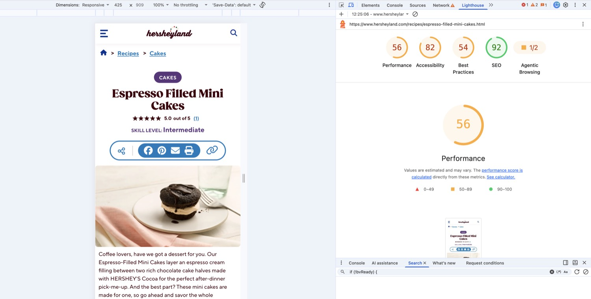
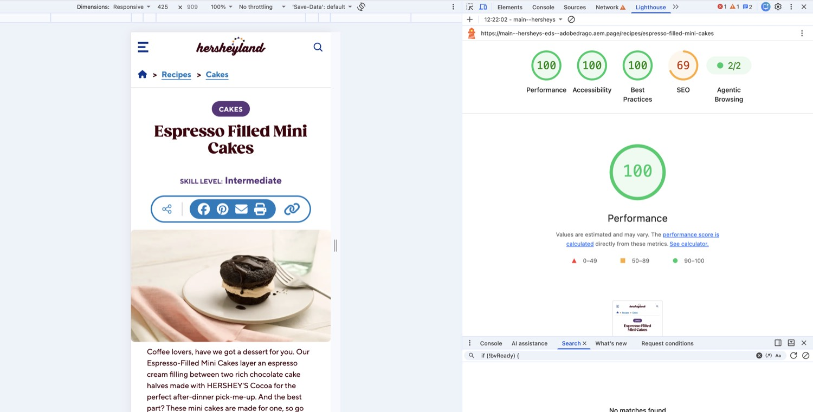
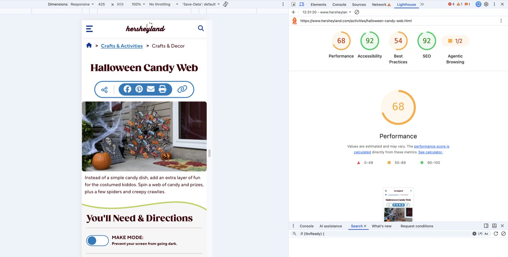
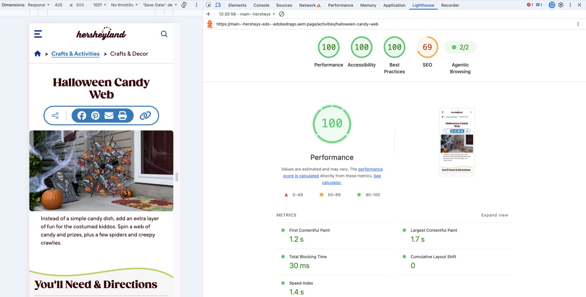
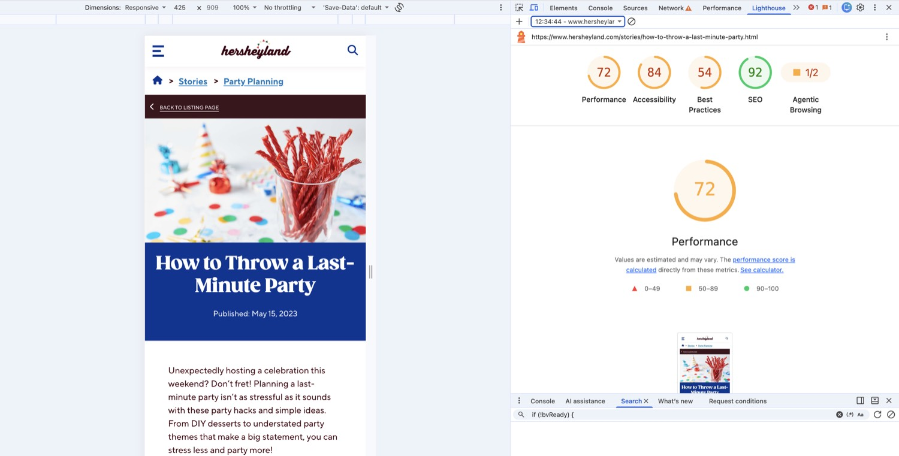
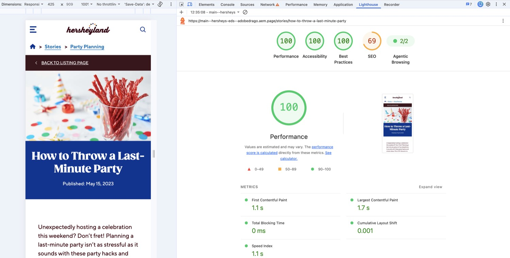
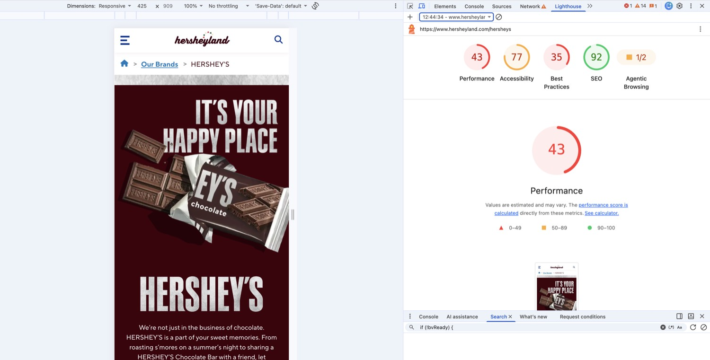
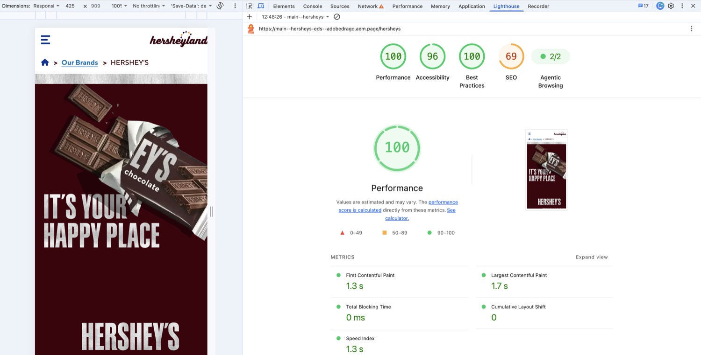
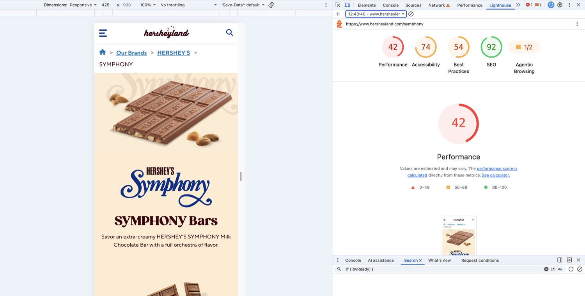
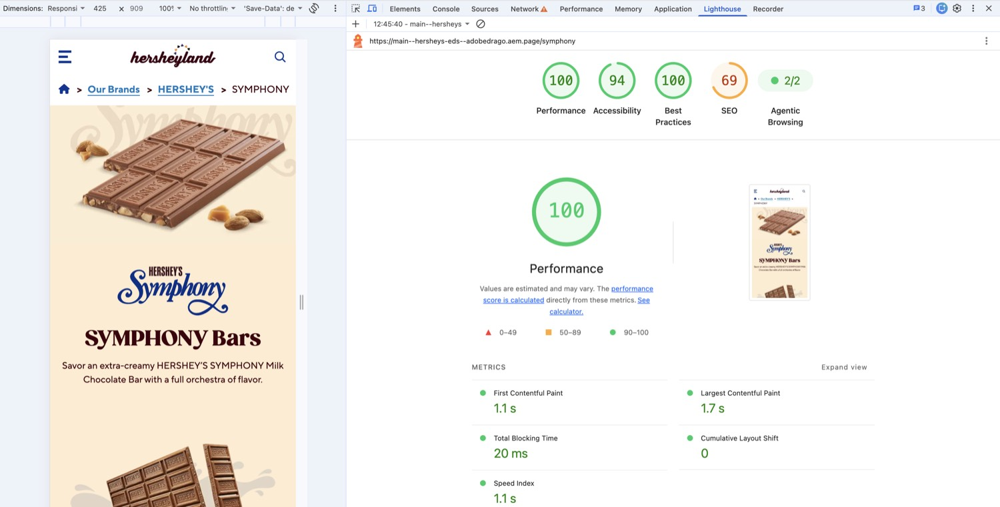
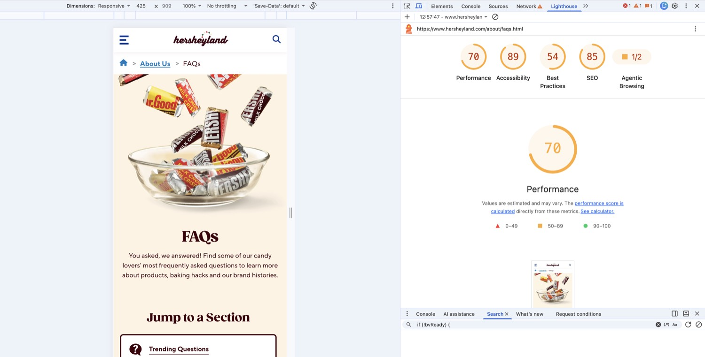
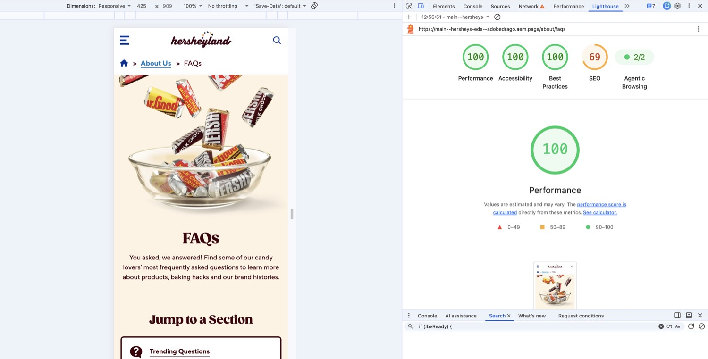
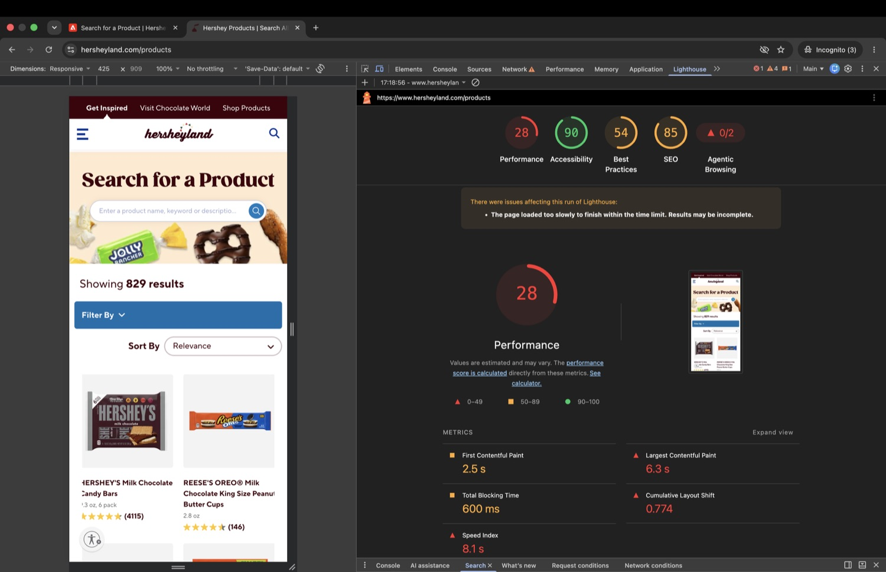
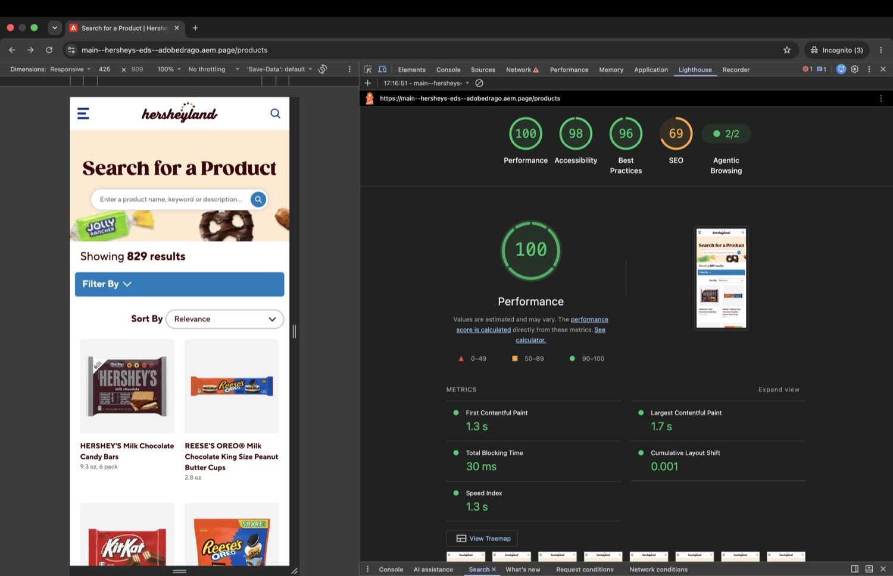
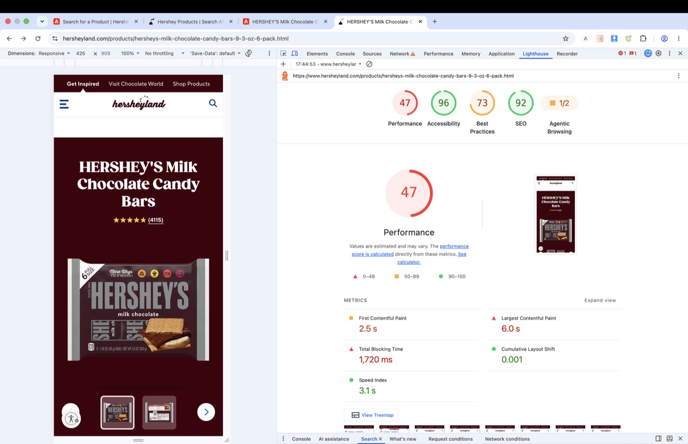
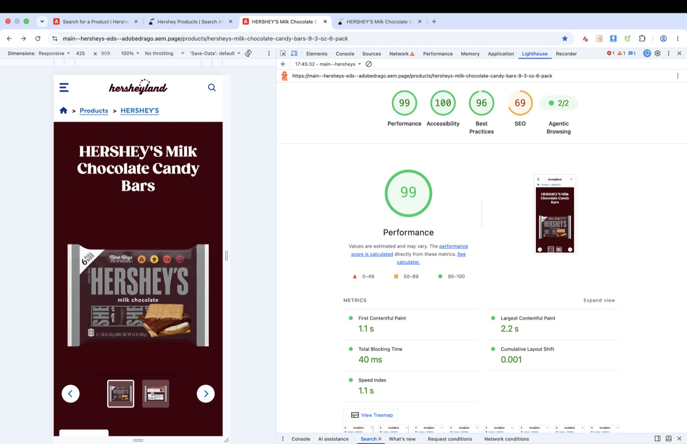
Journey 1 · Homepage Complete
Authored homepage: hero, welcome cards, product and related sliders, feature columns, recipe tabs and social cards, all under the hershey-home template.
-
Columns (homepage-hero, feature)Hero and feature bands with desktop/mobile images
-
Cards (welcome-cards, slider, social)Category cards, native-scroll sliders and the eight-post social snapshot
-
Tabs (recipes)Recipe collections with Left/Right, Home and End keys
-
BannerFull-width heading, text and call to action, with a
halloweenvariant
Journey 2 · Header & footer Complete
Navigation and footer are authored once in DA (/nav, /footer) and loaded by the header and footer blocks.
-
HeaderLinked logo, nested category list, search link turned into a GET form; closes on Escape; desktop breakpoint at 992px
-
FooterBrand watermark from the authored logo, link columns, cookie-preferences link wired to OneTrust
-
NewsletterAuthored form fields with client-side validation and a thank-you card; the block itself sends no network request
Journey 3 · Product pages Complete
Product pages load the Hershey tokens and, with a theme metadata value, a brand theme. Hero and nutrition data can come from the product master sheet; ratings, reviews and Where to Buy come from third parties.
-
Hero (product)Field-table content model; image gallery; reads the brand tab of
/products/product-master.jsonfor missing fields -
Tabs (nutrition) + Columns (nutrition)Nutrition Facts, ingredients, dietary info and contact box
-
Cards (product, related)Authored cards take precedence; Algolia only when none are authored (4 s limit)
-
Bazaarvoice + Where to Buy widgetsRatings, reviews and Q&A; PriceSpider (Wayvia) retailer list
-
Brand themesReese's, Cadbury, Payday, Rolo and others via
scripts/brand-themes.js
Journey 4 · Recipe pages Complete
Recipe pages use the hershey-recipe template; the all-recipes page is an Algolia-backed listing.
-
Hero (recipe)Image, category pill, title and skill level
-
Columns (recipe)Ingredients, tools, directions and Bake Mode
-
Search (Recipes)Search box, facets, sort, result grid and paging; 8 s timeout to an error message
-
Breadcrumb Trail + Social ShareHome-icon breadcrumbs; share and copy-link controls
Journey 5 · Stories Complete
Story pages share the product pages' brand tokens and fonts (hershey-product + hershey-story body classes) and use the story-plain template styles.
-
Hero (article)Story image, h1 and published date
-
Columns, Accordion, BannerLayout and content blocks reused on stories
-
Social ShareShare and copy-link controls
Journey 6 · Brand pages Complete
Brand landing pages (for example /symphony, /kisses or /brands/sourstrips) use a brand page theme from scripts/brand-themes.js (entries with file: 'brands'). A matching theme adds hershey-brand to the body and loads styles/hershey-brand.css before design/themes/brands.css.
-
Hero (brand)Brand logo, title and intro beside the brand photo;
hero-brand.js/hero-brand.css -
Columns (fact, callout, article, video, quotes, blog)Brand-only layouts; styles in
columns-brand.css -
Cards (brands, spotlight, stories, tiles, shop, grid, content, brand slider)Brand-page card variants; styles in
cards-brand.cssandcards-brand-slider.css -
Poll (quiz), Cards (wheel, quotes, steps), Hero (marquee)KISSES quiz, spin-the-wheel, Oreo cup quotes, Rolo product slider and the ticker hero, matched to the live brand pages
-
InstagramElfsight feed loaded without the consent gate, to match the live site
-
Brand themes42 brand-page themes (
file: 'brands'entries inscripts/brand-themes.js, including Symphony, YORK, KISSES, KIT KAT, REESE'S, Twizzlers, the four category themes and ALL BRANDS) alongside the Reese's, Cadbury, Payday and Rolo product themes -
Brand category pages
/brands/chocolate,/brands/sweets,/brands/snacksand/brands/zero-sugar, with thechocolate-primary,sweets-primary,snacks-primaryandzero-sugar-primarythemes -
Brands hub and Tabs (brand-tiles)
/brandslists every brand as logo tiles in tabs (tabs-brand-tiles.js/.css), themed byall-brands-primary -
Brand pages sheetThe DA sheet
/brands/brand-pages(columnpath, trailing*= prefix) tells the Themes panel which pages get brand themes; an entry also matches the same page under/brands
Journey 7 · Activity pages Complete
Activity (craft) detail pages author template: hershey-recipe and keep the recipe layout; the activities listing is the activities variant of hersheys-search and shares the product pages' brand tokens.
-
Search (activities)Find an Activity listing with banner, collapsible facets and Show More
-
Hero (recipe) on activity pagesImage gallery with previous/next buttons; share and print labels say "activity"
-
Details and DirectionsYou'll Need supplies, step-by-step directions and Make Mode; authored with Section Metadata
Style: activities -
Newsletter SignupTwo-column email capture shared with recipe pages
Journey 8 · About pages Complete
DA holds four pages under /about/: faqs, history, visit and newsletter. Paths under /about take the product pages' brand tokens and fonts (hershey-product).
-
FAQsJump Links tiles, Accordion, Cards (callout) "Your Baking Questions, Answered", and a Hero; tan box for the text-only "More FAQs" section
-
HistoryHero (video), Timeline Nav ("Select a Decade"), one Timeline block per decade, Link Group at the end
-
Visit and NewsletterPages exist in DA; their block usage was not reviewed here
Next steps
-
Fill the placeholders and look into EDS SEOAdd the business purpose to the Overview. Investigate why EDS scores 69 for SEO on every audited page (85–92 live) and re-run the audits once fixed.
-
Replace the product path prefix with a specific preview pageThe product journey still shows the
/products/…prefix in the journeys table. -
Move third parties off prototype settingsOneTrust uses a test domain script unless
onetrust-idmetadata is set, and Hershey Adobe Launch libraries are refused inscripts/consented.js. Switch when production access is available. -
Tidy served filesDecide whether
docs/index.htmlshould be public (adddocs/*to.hlxignoreif not) and removescripts/scripts.js.bak.